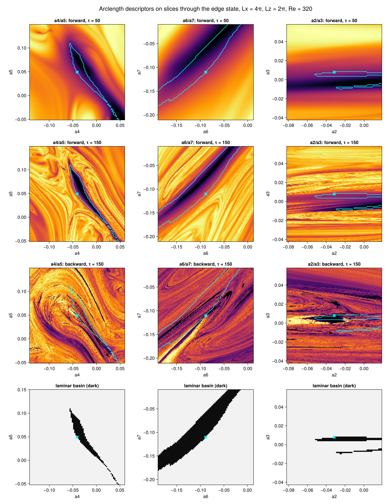
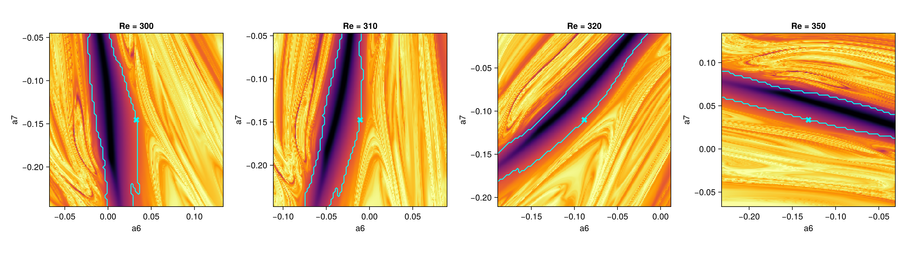
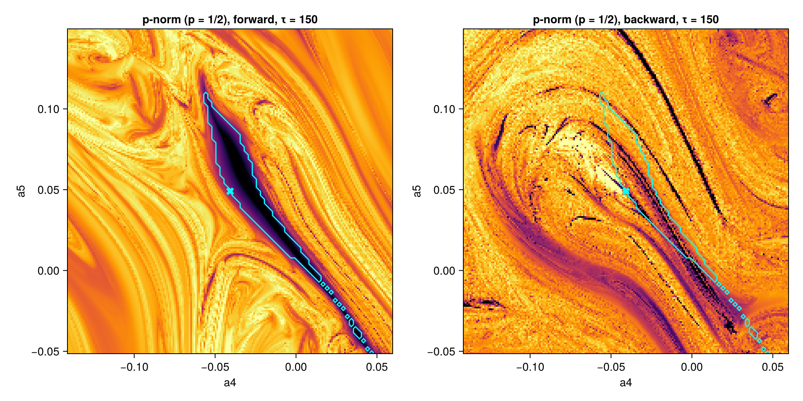
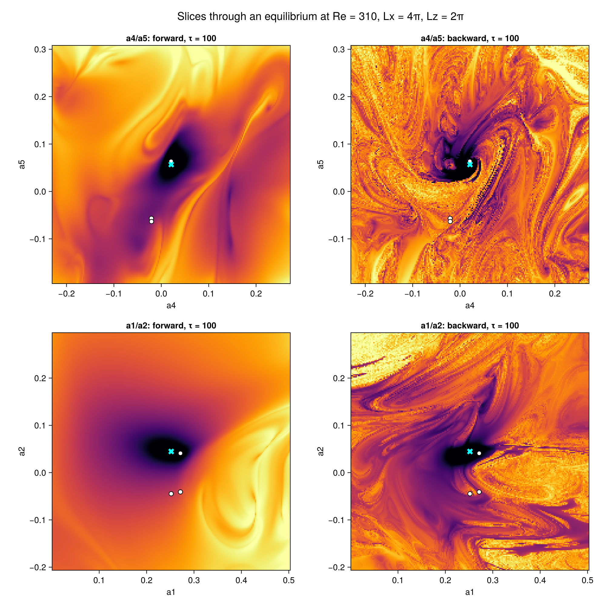

Lagrangian descriptors on slices of the nine-dimensional phase space
Lagrangian descriptors "paint" the phase portrait by coloring each initial condition by a quantity accumulated along the solution through it, forward and backward in time; their singular features reveal stable and unstable manifolds. We compute them with LagrangianDescriptors.jl on two-dimensional slices of the nine-dimensional MFE phase space, for $L_x = 4\pi$, $L_z = 2\pi$ and $Re$ around the saddle-node at $Re = 308.16$.
Each slice is an affine plane through a base point, with two amplitudes varied and the other seven fixed. Slices through the laminar state are featureless (coordinate planes through it lie in invariant subspaces), so we use as base points the edge states and the equilibria of the bifurcation page. To locate the laminar basin boundary independently, we also classify a coarser grid of the same slice by whether each trajectory decays or makes a turbulent excursion (the criterion used for edge tracking).
Descriptor maps take about ten minutes in total with 4 threads; they are cached under docs/src/assets/data.
using LinearAlgebra, OrdinaryDiffEq, ForwardDiff, Random, Statistics, CairoMakie
using LagrangianDescriptors
include(joinpath(get(ENV, "MFE_ROOT", joinpath(@__DIR__, "..")), "src", "setup.jl"))
NBC(Re) = MFEParams(; Re, NBC_DOMAIN...)NBC (generic function with 1 method)Base points
Edge states: the end of an edge-tracking run (see the bifurcation page), at each $Re$.
function edge_data(Re; nsteps = 200, Δt = 5.0)
lam, d = laminar_state(), njp_initial_condition(1.0)
states, times = edge_track(lam + 1e-3d, lam + 0.5d, NBC(Re); nsteps, Δt)
return hcat(times, reduce(vcat, permutedims.(states)))
end
edge_state(Re) = cached(() -> edge_data(Re), "edge_nbc_Re$(Int(Re))")[end, 2:10]edge_state (generic function with 1 method)Equilibria: the two symmetry-inequivalent equilibria found at $Re = 400$ on the bifurcation page, followed down in $Re$ by Newton's method, together with their images under the symmetries $T_{L_x/2}$ and $T_{L_z/2}$ (SIADS eqs (3.24)–(3.25)).
const A400 = ([0.192, 0.048, 0.035, 0.017, 0.036, 0.106, -0.18, 0.063, -0.09],
[0.312, 0.027, 0.036, -0.016, -0.077, -0.071, 0.299, -0.073, -0.076])
Tx(a) = a .* [1, 1, 1, -1, -1, -1, -1, -1, 1]
Tz(a) = a .* [1, -1, -1, 1, 1, -1, -1, -1, 1]
function equilibria(Re)
out = Vector{Float64}[]
for a0 in A400
a = a0
for r in range(400, Re, length = 60)
a, ok = find_equilibrium(a, NBC(r))
ok || error("lost the equilibrium at Re = $r")
end
append!(out, [a, Tx(a), Tz(a), Tx(Tz(a))])
end
return out
endequilibria (generic function with 1 method)Computing descriptors
The infinitesimal descriptor $M = |\dot a|$ gives the arclength of the solution over $[0, \tau]$ (forward) and $[-\tau, 0]$ (backward). The model is dissipative, so backward solutions can blow up; max_trajectory_value stops them.
arclength(du, u, p, t) = norm(du)
pnorm_half(du, u, p, t) = sum(x -> sqrt(abs(x)), du) # p-norm descriptor with p = 1/2
slice(base, i, j, xs, ys) = [(u = copy(base); u[i] = x; u[j] = y; u) for y in ys, x in xs]
function descriptor_maps(Re, base, i, j, xs, ys; τ, M = arclength)
prob = ODEProblem(mfe!, base, (0.0, τ), NBC(Re))
lagprob = LagrangianDescriptorProblem(prob, M, slice(base, i, j, xs, ys))
lagsol = solve(lagprob, Tsit5(); max_trajectory_value = 5.0, abstol = 1e-8, reltol = 1e-8)
# the descriptors come as vectors over the initial conditions; reshape them to the grid
sz = (length(ys), length(xs))
return reshape(lagsol(:forward), sz), reshape(lagsol(:backward), sz)
end
function basin_map(Re, base, i, j, xs, ys)
uu = slice(base, i, j, xs, ys)
B = zeros(size(uu))
Threads.@threads for k in eachindex(uu)
B[k] = edge_side(uu[k], NBC(Re)) == :high ? 1.0 : 0.0
end
return B
endbasin_map (generic function with 1 method)A named slice, with its descriptor maps and basin map cached:
struct Slice
name::String
Re::Float64
base::Vector{Float64}
i::Int
j::Int
xs::StepRangeLen{Float64}
ys::StepRangeLen{Float64}
end
function Slice(name, Re, base, i, j, w; n = 201)
xs = range(base[i] - w, base[i] + w, length = n)
ys = range(base[j] - w, base[j] + w, length = n)
return Slice(name, Re, base, i, j, xs, ys)
end
coarse(r, n = 81) = range(first(r), last(r), length = n)
tag(s::Slice) = "$(s.name)_Re$(Int(s.Re))_a$(s.i)a$(s.j)"
function ld(s::Slice; τ, M = arclength, mname = "arc")
key = "ld_$(tag(s))_$(mname)_tau$(Int(τ))"
F = cached(() -> descriptor_maps(s.Re, s.base, s.i, s.j, s.xs, s.ys; τ, M)[1], key * "_fwd")
B = cached(() -> descriptor_maps(s.Re, s.base, s.i, s.j, s.xs, s.ys; τ, M)[2], key * "_bwd")
sz = (length(s.ys), length(s.xs))
return reshape(F, sz), reshape(B, sz)
end
basin(s::Slice) = cached(() -> basin_map(s.Re, s.base, s.i, s.j, coarse(s.xs), coarse(s.ys)), "basin_$(tag(s))")basin (generic function with 1 method)Plotting helper: a descriptor map (its logarithm, to compress the range), the laminar basin boundary (cyan), the base point (cross), and any other points (white circles).
function panel!(pos, s::Slice, A; title, basin_overlay = true, points = Vector{Float64}[])
ax = Axis(pos; title, xlabel = "a$(s.i)", ylabel = "a$(s.j)", aspect = 1)
L = log10.(max.(A', 1e-6)) # the descriptor vanishes at fixed points
q = sort(vec(L))
colorrange = (q[ceil(Int, 0.01 * end)], q[floor(Int, 0.99 * end)])
heatmap!(ax, s.xs, s.ys, L; colormap = :inferno, colorrange)
if basin_overlay
contour!(ax, coarse(s.xs), coarse(s.ys), basin(s)'; levels = [0.5], color = :cyan, linewidth = 1.5)
end
for q in points
first(s.xs) ≤ q[s.i] ≤ last(s.xs) && first(s.ys) ≤ q[s.j] ≤ last(s.ys) &&
scatter!(ax, [q[s.i]], [q[s.j]]; color = :white, strokecolor = :black, strokewidth = 1, markersize = 10)
end
scatter!(ax, [s.base[s.i]], [s.base[s.j]]; color = :cyan, marker = :xcross, markersize = 14)
hidedecorations!(ax; label = false, ticklabels = false, ticks = false)
return ax
endpanel! (generic function with 1 method)Slices through the edge state at Re = 320
Three planes through the edge state: spanwise flows $(a_4, a_5)$, normal vortex modes $(a_6, a_7)$, and streak/vortex $(a_2, a_3)$. Top: forward arclength over $\tau = 50$ and $\tau = 150$; bottom: backward arclength over $\tau = 150$, and the laminar basin itself (dark: decays, light: turbulent excursion).
e320 = edge_state(320.0)
slices_edge = [Slice("edge", 320.0, e320, 4, 5, 0.1), Slice("edge", 320.0, e320, 6, 7, 0.1),
Slice("edge", 320.0, e320, 2, 3, 0.05)]
fig = Figure(size = (1200, 1550))
for (c, s) in enumerate(slices_edge)
F50, _ = ld(s; τ = 50.0)
F150, B150 = ld(s; τ = 150.0)
panel!(fig[1, c], s, F50; title = "a$(s.i)/a$(s.j): forward, τ = 50")
panel!(fig[2, c], s, F150; title = "a$(s.i)/a$(s.j): forward, τ = 150")
panel!(fig[3, c], s, B150; title = "a$(s.i)/a$(s.j): backward, τ = 150")
ax = Axis(fig[4, c]; title = "laminar basin (dark)", xlabel = "a$(s.i)", ylabel = "a$(s.j)", aspect = 1)
heatmap!(ax, coarse(s.xs), coarse(s.ys), basin(s)'; colormap = :grays)
scatter!(ax, [s.base[s.i]], [s.base[s.j]]; color = :cyan, marker = :xcross, markersize = 14)
end
Label(fig[0, :], "Arclength descriptors on slices through the edge state, Lx = 4π, Lz = 2π, Re = 320"; fontsize = 18)
What the maps show:
- On these slices the laminar basin is a thin band (bottom row), and the edge state lies on its boundary. Points in the band decay quickly, so they have a short forward arclength: the dark valley of the forward descriptor at $\tau = 50$ is the laminar basin, and its sides follow the basin boundary (cyan).
- With the longer window $\tau = 150$ the forward descriptor develops sharp ridges and valleys along the basin boundary: this is the stable manifold of the edge state, the edge of chaos, whose points neither decay nor become turbulent. Outside the band, the fine filaments are the stable manifolds of the chaotic saddle, where lifetimes become fractal.
- The backward descriptor shows the other family of structures (the unstable manifolds), stretched roughly transverse to the forward ones.
Around the saddle-node
The same $(a_6, a_7)$ slice through the edge state, at $Re = 300$ (below the saddle-node, no equilibria other than the laminar state), $310$, $320$ and $350$. Forward arclength, $\tau = 150$.
Res_scan = (300.0, 310.0, 320.0, 350.0)
fig = Figure(size = (1500, 420))
for (c, Re) in enumerate(Res_scan)
s = Slice("edge", Re, edge_state(Re), 6, 7, 0.1)
F, _ = ld(s; τ = 150.0)
panel!(fig[1, c], s, F; title = "Re = $(Int(Re))")
end
On this slice the laminar band through the edge state, with the edge state on its boundary, is present at all four Reynolds numbers, on both sides of the saddle-node: the edge state lies close to the laminar state (fluctuation energy $\approx 0.02$–$0.03$) and is not connected to the equilibria born at $Re = 308.16$, which have fluctuation energy $\approx 0.6$. Nothing in these maps changes qualitatively at the saddle-node. The orientation of the band changes because the edge state, and hence the plane, moves with $Re$.
Other descriptors
The $p$-norm descriptor $M = \sum_i |\dot a_i|^{1/2}$ (Mancho et al. 2013) weighs small velocities more, which sharpens the features near the edge state:
s = slices_edge[1]
Fp, Bp = ld(s; τ = 150.0, M = pnorm_half, mname = "p05")
fig = Figure(size = (1000, 500))
panel!(fig[1, 1], s, Fp; title = "p-norm (p = 1/2), forward, τ = 150")
panel!(fig[1, 2], s, Bp; title = "p-norm (p = 1/2), backward, τ = 150")
Slices through the equilibria
Just above the saddle-node, at $Re = 310$, the two families of equilibria are close together. A slice $(a_4, a_5)$ through one equilibrium of the upper (fewer unstable directions) family; white circles are the projections of all eight equilibria that fall inside the window. The laminar basin does not reach these slices (no cyan contour), so we show forward and backward descriptors over $\tau = 100$.
eqs310 = equilibria(310.0)
[(E = round(fluctuation_energy(a), digits = 4),
unstable = count(>(0), real.(eigvals(ForwardDiff.jacobian(x -> mfe(x, NBC(310.0)), a))))) for a in eqs310]8-element Vector{@NamedTuple{E::Float64, unstable::Int64}}:
(E = 0.6485, unstable = 3)
(E = 0.6485, unstable = 3)
(E = 0.6485, unstable = 3)
(E = 0.6485, unstable = 3)
(E = 0.6282, unstable = 2)
(E = 0.6282, unstable = 2)
(E = 0.6282, unstable = 2)
(E = 0.6282, unstable = 2)s_eq = Slice("eq", 310.0, eqs310[1], 4, 5, 0.25)
Fe, Be = ld(s_eq; τ = 100.0)
s_eq2 = Slice("eq", 310.0, eqs310[1], 1, 2, 0.25)
Fe2, Be2 = ld(s_eq2; τ = 100.0)
fig = Figure(size = (1000, 1000))
panel!(fig[1, 1], s_eq, Fe; title = "a4/a5: forward, τ = 100", basin_overlay = false, points = eqs310)
panel!(fig[1, 2], s_eq, Be; title = "a4/a5: backward, τ = 100", basin_overlay = false, points = eqs310)
panel!(fig[2, 1], s_eq2, Fe2; title = "a1/a2: forward, τ = 100", basin_overlay = false, points = eqs310)
panel!(fig[2, 2], s_eq2, Be2; title = "a1/a2: backward, τ = 100", basin_overlay = false, points = eqs310)
Label(fig[0, :], "Slices through an equilibrium at Re = 310, Lx = 4π, Lz = 2π"; fontsize = 18)
Around the equilibrium both descriptors are small in a blob of slow motion, with filaments spiralling into it (the equilibrium has complex unstable eigenvalues). A clean cross-shaped saddle pattern is not visible: with three or four unstable directions in nine dimensions, a two-dimensional slice cuts the stable and unstable manifolds only along curves that depend on the plane, and the chaotic saddle dominates the picture away from the equilibrium. The laminar basin does not reach these slices, consistent with the equilibria lying far from the edge state.